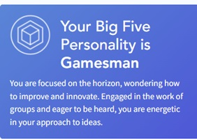
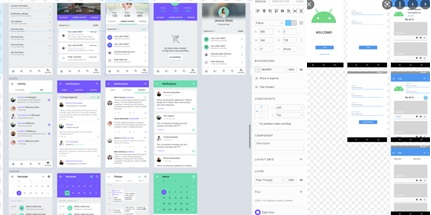

Personal Information
Hey! My name is Brian Rabino. My student number is S3851265, student email address is S3851265@student.rmit.edu.au. Please contact me if you have any questions about the project!
A bit about me... I'm 21 years old, Filipino, born and raised in the UK, and moved to Australia in 2014. However, I speak English and only understand a little Filipino. So far, I've completed VCE Year 12, and I am currently in my final year for my Bachelor in Information Technology. I found my favourite hobby, volleyball, last year when Victoria eased restrictions and I currently play in social competitions. I hope to play for state clubs next year!
Interest in IT
Originally inspired to enter the field through experiencing Virtual Reality software, I impulsively decided to transfer from a career in Science and Biomedicine to a career in software development. I transferred into a Bachelor of CS at RMIT, from a Bachelor of Science at The University of Melbourne. As I completed my CS degree throughout 2020, I took a myriad of IT subjects along the way, which gave me insight and understanding in the systems and networks field. Managing, configuring, and protecting computer systems had always interested me, and was a bright prospect as a future career upon graduating from RMIT. My IT experience is limited to building PCs, configuring Windows software from scratch, diagnosing and providing solutions to family/friends’ Windows devices.
I chose to transfer to RMIT as, during my research in the best Computer Science and Information Technology degrees, RMIT was always at, or near the top of the lists and rankings. Upon exploring the RMIT website and reading what the CS and IT degrees offer, and comparing these to other programs at different universities, I chose to enrol in RMIT for the best possible chance at preparing myself for the workforce.
Throughout my studies, I have experienced a wide range of areas in the IT industry, from cybersecurity and penetration testing to software programming and website development. In my last year, I expect to explore further into more advanced concepts of IT and gain a deeper understanding of management and configuration of computer and network systems, as well as how IT is used from a business standpoint.
Ideal Job
My ideal job would be a Senior Systems Administrator or equivalent. This job describes the overseeing of maintenance and configuration of organisational computer systems. Working solo or in a team of professionals, a Systems Administrator, or sysadmin, makes sure an organisation’s computer systems are meeting the needs and requirements, through troubleshooting, diagnosis, and maintenance of servers and networks.
[https://www.seek.com.au/job/56122588?type=promoted#sol=cdc3207c107cb789c48bbd8288eb5650ee5fcd3d]

This position is appealing as it sets a goal, career progression, and is generally what I am interested in in the IT industry. Through diligent routine, as well as unexpected situations, a sysadmin will provide an organization the solutions to their computing systems needs. This position takes years of experience, and such is a rewarding milestone which pays well.
The types of skills a sysadmin requires is a deep understanding and experience in top industry standard software, computer network and systems used in organizations, as well as extra skills such as leadership, sociability, adaptability, and reliability. For example, sysadmins who have:
- Experience in modern cloud technologies, such as AWS or Cisco Technologies
- Experience in infrastructure management such as upkeep and maintenance of patched and configured computer systems, as well as hardware and equipment
- Experience in cybersecurity and industry-standard protection in every layer of the OS model
- Experience in designing networks and network architecture
Although I do not have professional IT experience, I am planning to acquire an internship during or towards the end of my final year.
Personal Profile
MBTI Results

I think the MBTI results are a reasonable indicator for the type of person someone is, or even aspires to be. Personally, the type of person I am is largely accurate in the results of the test, and other friends also have results that I would consider true to their personalities.
In my opinion, these results may influence and reinforce my natural behaviour in a team environment as a more talkative, open and fun team member. Previous experiences and group projects I have participated in correlate to this.
A team should be a mix of likeminded people, as well as people who approach a problem differently, to cover all bases and provide a cohesive solution.
Learning Style Results
I think the MBTI results are a reasonable indicator for the type of person someone is, or even aspires to be. Personally, the type of person I am is largely accurate in the results of the test, and other friends also have results that I would consider true to their personalities.
In my opinion, these results may influence and reinforce my natural behaviour in a team environment as a more talkative, open and fun team member. Previous experiences and group projects I have participated in correlate to this.
A team should be a mix of likeminded people, as well as people who approach a problem differently, to cover all bases and provide a cohesive solution.
Traitify Results
I believe the Big Five personality test is like the MBTI results in that the description is accurate for me. I like to work in groups and am eager to show my solutions and thinking, eager to discuss. Brainstorming ideas and leading topics from one to another is common in my previous group projects.
This result only reinforces the idea of supporting group members by creating and engaging in discussion to improve and innovate solutions.
I think forming a group with similar styles as a Gamesman, ones that are eager to improve the solution through the sharing of ideas, would be a great advantage.
Project Idea
Overview
The project will be a simple web application, viewable through any device with web browser capabilities, which will allow a student to centralize their subjects ongoing for the semester and provide the student the ability to create a checklist to monitor lecture/practical attendance, as well as status levels on each week/topic, and sorted dates for upcoming projects/assignments. This application aims to be an all-in-one application, independent of university, and presents itself as a way for a student to quickly check “what’s next” on the to-do list with an appealing, minimalistic user interface.
Motivation
Throughout my degree and experiences in two different universities, I have found that university apps are quite lacklustre in assisting students with planning their studies. Personally, I am not the greatest in planning my assignments, as well as reviewing topics. Statistically, there are ‘around 220 million tertiary education students in the world, up from 100 million in 2000’. With such a large market, there are surprisingly no popular study planning applications that aims for this demographic worldwide, but rather each university provides their students with their dedicated app. An aide to students globally, the web application serves to assist the student in planning and prioritization throughout their education.
Description
The project will first be drafted and created through Figma, a drafting/mock application website. This will serve as the foundation and groundwork to allow team members to visualize the direction of the project. The user interface (UI) of the application aims to be as minimalistic and simplistic as possible, while simultaneously not excluding any features that study planning applications require.
The web application will allow for login and account-saving capabilities, working with a secure database to ensure privacy. Upon signing in, the user is brought to the homepage, which will display, with it’s clear and concise visual language, the student’s highest priority tasks. The goal is for a student to open the app, log in, and in the first two seconds, able to see what they should aim to do next. This feature will be sorted by time (due date). Each item on the homepage will feature a due date so students can see the amount of time remaining.
The first time a user is signed in, an onboarding process is initiated so the student can all relevant information for every subject they wish to add. Items include lectures, tutorials, practicals, assignments, timetable etc. This is ideally done before the semester begins so that students can visualize their study timetable from the beginning and monitor performance throughout the semester.
Each subject will have independent pages, with items grouped by Assignments and Classes. The Assignments page will display the next upcoming assignments in order by due date. The Classes page will display a checklist of lectures/practicals sorted by weeks. Each week gives the user the ability to assign the lecture or practical a status level with three different levels (based on colour). With red (haven’t started), yellow (need more study) and green (confident in the topic), this lets students see what topics need reviewing at a glance.
I believe status levels are a key feature to the web application which distinctively separates this study planning application with others. At a glance, students can immediately see which topics need reviewing, which classes are behind (or ahead), and which classes the student should prioritize henceforth. Although I worry that users will not appreciate the extra effort to recording status levels in the log, I anticipate that the team creates a natural, time-efficient, effortless way to record these status levels.
The user is also prompted to enter their timetable when onboarded, such that the web application will also display lectures/practicals that are to be attended (highest priority is attending classes, followed by upcoming assignments.) Items disappear from the homepage as students check them off, indicating they have completed the class with a status level.
The web application also features a separate page dedicated to the timetable so students can quickly and easily see when and where the next class is located. Storing a timetable in an application, centralising it into one place, is much more efficient compared to saving a screenshot of Allocate Plus and putting it in an obscure album on a mobile phone.
The web application will be developed using an app-building website throughout the semester, with discussion and input from all group members to create more innovative features if needed.
Another important feature would be a grade calculator, where the student will be able to input past results, or theoretical results, and the web application will inform students their grade information (final grade, theoretical final grade, % needed for x grade). This is highly sought after for students during exam time, allowing students to prioritize and allocate important study time to the right subjects.
Some of the drawbacks that I anticipate will occur is the ability to maintain a secure database and account-saving capabilities. Different app-building websites use different software for their database technologies and choosing what would be feasible for the project may be difficult. Ensuring privacy is the highest priority, as students may choose to enter a timetable with class location information. The web application must be potent enough to deter cyberattacks and maintain a level of stability to protect the information of students.
Further, the team hopes to choose an app-building website that allows for the team to create time-based prioritized feeds and lists. This is different to the calendar that most university apps implement, as they usually include university-wide announcements that aren’t relevant to the immediate semester and provides a cleaner and simpler way to visualize upcoming dates and tasks.
Tools and Technologies
As mentioned, Figma will be used as the draft to visualize the foundations of the web app. For an introductory subject such as Intro to IT, I believe an app-building website that does not require a high level of coding with programming languages would be preferred. Software such as Bubble, AppyPie, or other similar programs could potentially be used. OBS (Open Broadcaster Software) will be used to screencast and record the demonstrations of the application on both PC and mobile web browsers.
Skills Required
Coding experience would not be necessary, unless the group decides to switch to a more coding-based building process. For the meantime, I think team members should understand user-centred design and user experience to create a web application that looks and feels seamless. As for feasibility, UX/UI studies are highly documented across the Internet as well as taught in other subjects in RMIT, so it would not be difficult to attain a decent skillset required for this project.
Outcome
If the project succeeds, the web application will have a running domain and can be used immediately by students globally. Tertiary students worldwide will be able to easily plan around their semester and monitor their performance throughout. Tracking upcoming assignments, classes, quickly viewing timetables, grade information, all in one centralised web application saved to a personal account. An application that will impact the study planning and time management for all students.